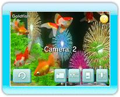

11 |
Switching the Camera |
 |
|
If you point to Change Camera on the aquarium menu and press 
● Camera Types
*If 10 minutes pass without any control input, the camera will automatically switch to Autocamera 1. However, when fish or Mii characters (→P.12) are selected and swimming automatically in the aquarium, the camera will not switch.
|
 |
 |